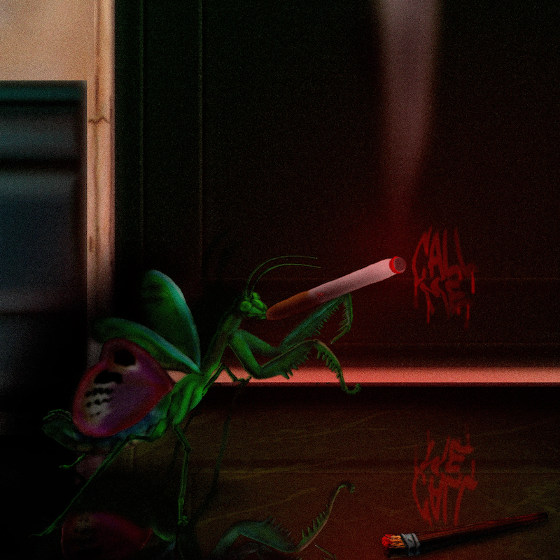
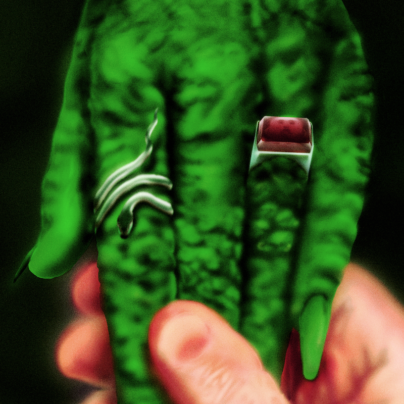
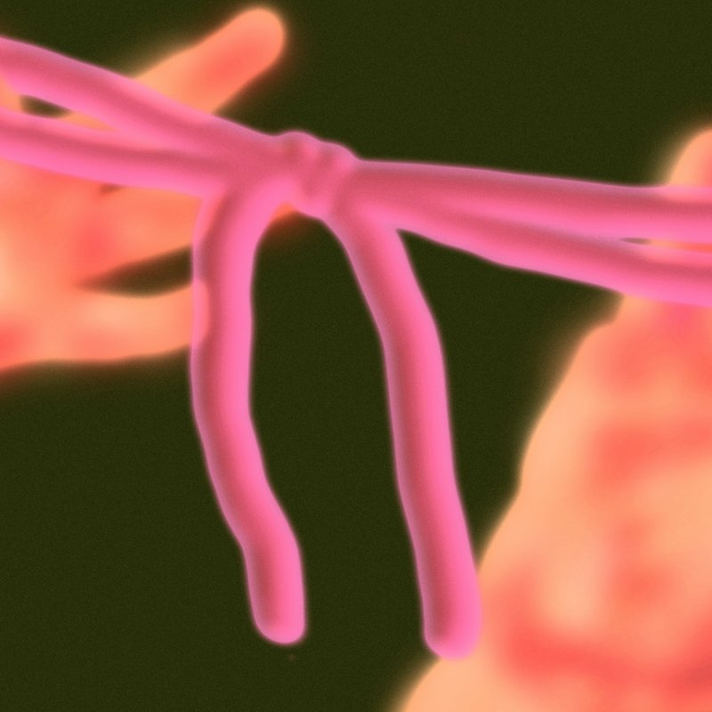
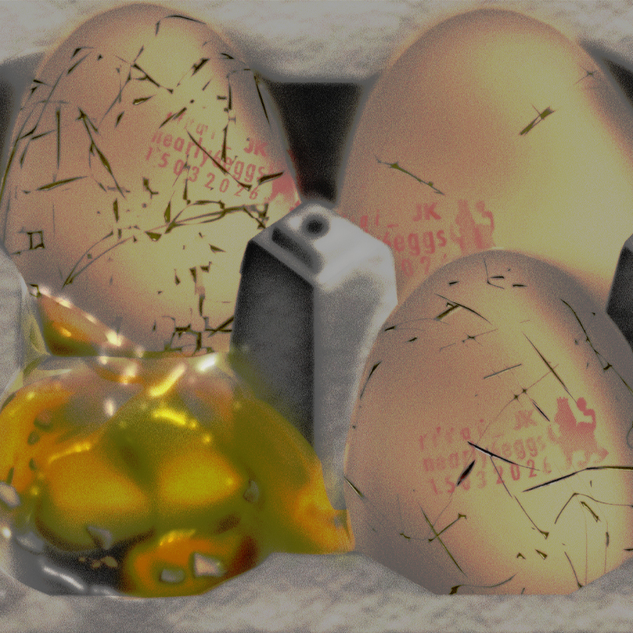
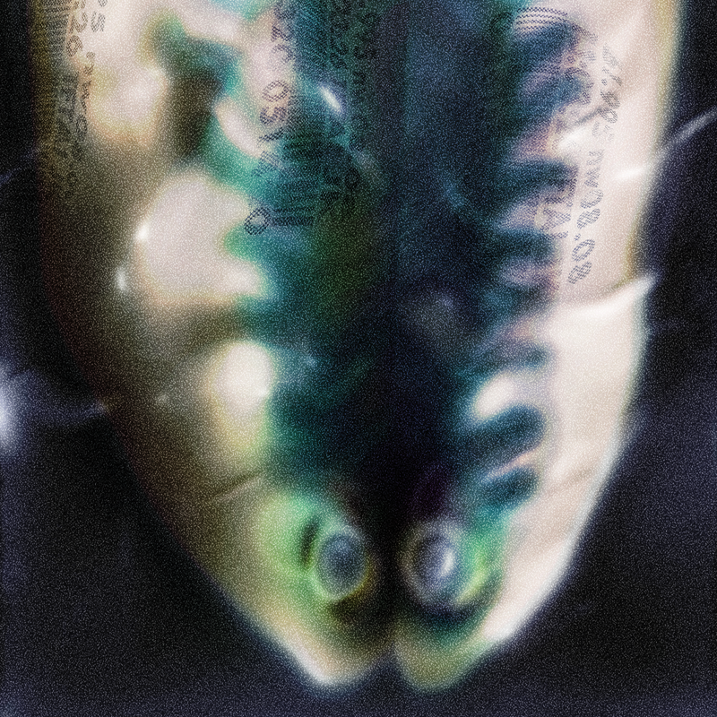
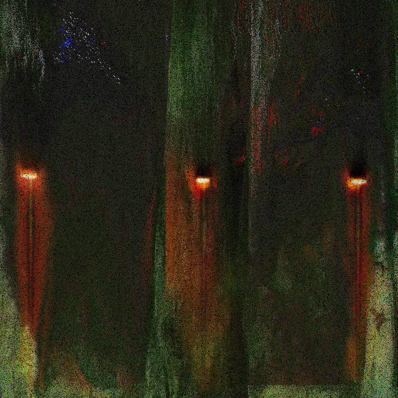
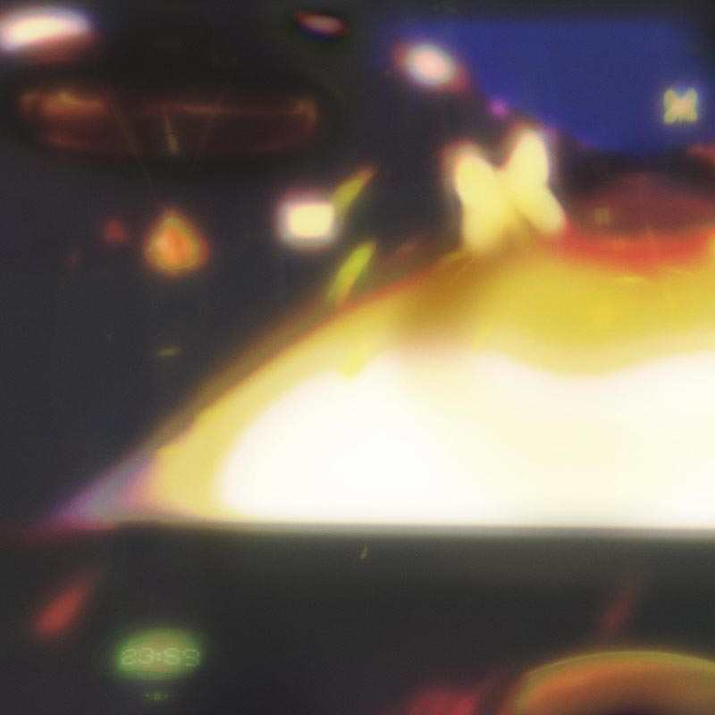
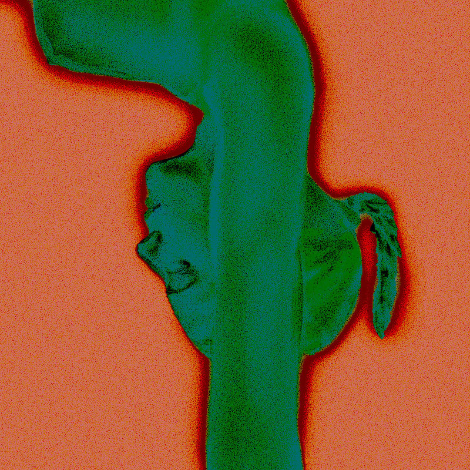
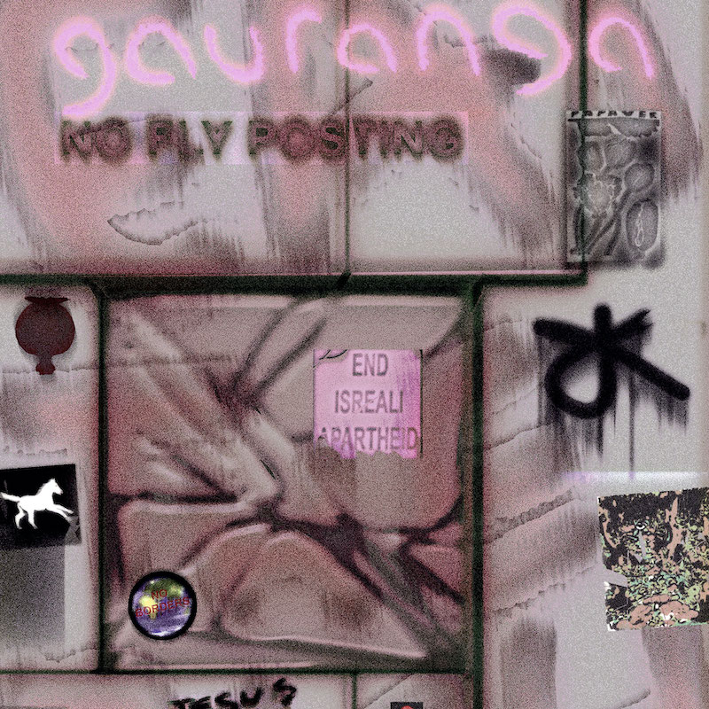

Jacob_Kelly@hotmail.co.uk / 07575722181 / Manchester
contact for order requests.
Jacob Kelly is a Manchester-based artist working across digital print, text, and sound. Jacob’s practice explores irrepressible trauma through dreamlike imagery, drawing from memory, the unconscious, and lived experience. Writing and poetry sit at the centre of the work, often forming the structure images emerge from—texts that fragment, loop, or break down as a way of reaching something beyond straightforward language.
The work is driven by a need to communicate something that resists clear explanation—something felt in the body before it can be named. Jacob works with the idea that art is an extension of the body, and the body an extension of the land. Influenced by dark ecology, folklore, childhood imagery, and literature, the work moves between states—human and animal, conscious and unconscious, surface and depth. Transformation is a recurring structure: amphibious, nocturnal, shifting between worlds, resisting fixed or binary ways of thinking. Blurring the lines and boundaries that restrain our lives.
Much of Jacob’s practice is shaped by mental health, including experiences of depression, ADHD, autism, and PTSD, which have at times made it difficult to sustain a physical studio practice or engage with traditional production methods. In response, Jacob has developed a way of working that is largely self-contained and resourceful—building and maintaining computers from low-cost or salvaged parts, and working independently to produce large-scale digital images.
Jacob is more driven by exploration than by finished projects: the urge to discover a new technique or a new approach, using mixed media to emphasise the feeling of the work rather than any particular message. The work is inspired by peripheral or overlooked developments in the history of art and filmmaking, including matte paintings, analogue animation, and photographic effects.
These images are often made at extreme resolutions—sometimes several metres in scale—in order to recreate effects associated with analogue photography and animation, such as grain, blur, halation, glow, lens aberration, refraction, and chemical degradation. This process allows Jacob to move between high and low definition, and between high and low cultural references, using digital tools in ways that feel unstable, physical, and imperfect.
The images often appear fragmented or collapsing. Narratives break apart, forms dissolve, and meaning slips. These works attempt to reconstruct images from dreams, holding onto something fleeting before it disappears. The instability within the work reflects both personal experience and a wider sense of social and ecological breakdown, where inherited trauma sits alongside cycles of decay and return.
Jacob works entirely by hand within digital systems, rejecting AI-driven production. The process is slow, repetitive, and often involves pushing unreliable or limited hardware to its limits. This tension—between control and failure, clarity and distortion—is central to the work.
Alongside the visual practice, Jacob produces ambient and experimental sound. The sound work treats landscape as something you move through rather than observe—layered environments where moments of melody or clarity emerge from dense, uneasy atmospheres. Across all mediums, the work returns to the same problem: how to form an image from a dream, and how to communicate it before it disappears. Trauma often acts as an impetus for forgetting, but perhaps by building from the unknown we can relieve ourselves of the nightmares that re-emerge.








